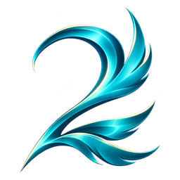

版本更新
2.0.54

ATREIA ASSISTANT
让每一次冒险，更清晰。
简体中文汉化 · DPS 战斗统计
为 AION2《永恒之塔2》玩家打造的免费开源助手
LATEST NEWS
YOUR ADVENTURE, ASSISTED
汉化与战斗统计，两个独立入口。
从读懂世界，到了解自己的每一场战斗。
支持 Steam / Global 与 PURPLE 客户端，沿用国服《永恒之塔》的名称与术语。检测、安装、更新和还原，在同一个入口完成。

轻量置顶浮窗，清晰展示伤害、治疗与队伍贡献。战斗结束后，继续查看本地记录和技能明细。
下载 Windows x64 MSI，结束正在进行的助手操作后运行安装包。
汉化前退出游戏，核对客户端目录。战斗统计需另行安装 Npcap 驱动。
更新助手后，在汉化页面重新检测并安装汉化；MSI 不会自动修改游戏资源。
当前汉化适配 Steam Build 25800038 与 PURPLE TW 122。游戏更新后请重新检测；安装汉化后，将游戏文字语言设为 English。游戏内所有界面尚未逐一验收，遇到漏译可在项目仓库反馈。
仅使用汉化不需要 Npcap。开启战斗统计前，请从 Npcap 官网 安装驱动。汉化与统计独立工作。
在 GitHub Issues 提交问题，附上助手版本、游戏客户端以及问题发生的界面。
READY FOR YOUR NEXT ADVENTURE
你的亚特雷亚，清晰一点。
Windows x64 · 整合安装包